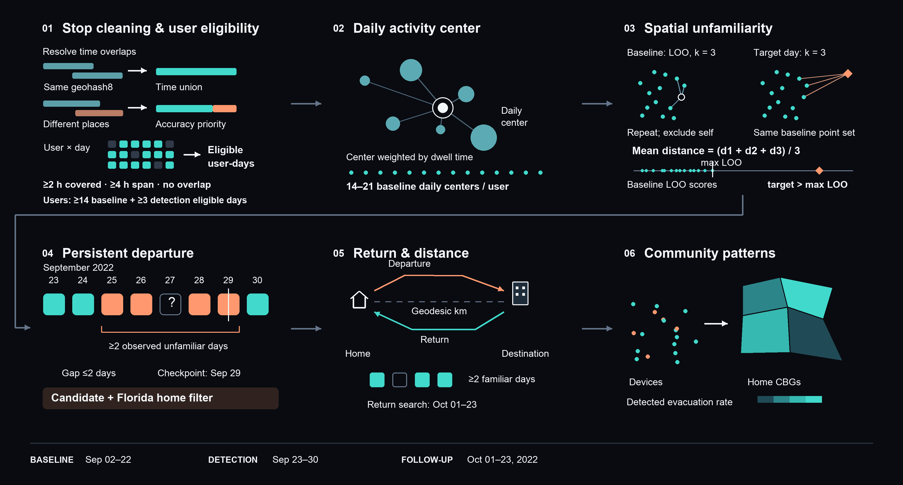

The Influence of Social and Material Dimensions of Place Attachment in Hurricane Evacuation Compliance under Mandatory Evacuation Orders
We use large-scale mobile phone data to detect who evacuated ahead of Hurricane Ian's landfall in Southwest Florida, and test whether place attachment — protecting a mortgaged home, or staying close to a social network — helps explain who stayed behind despite mandatory evacuation orders.
Start exploring ↓01
Hurricanes are one of the most destructive natural hazards in the United States, causing an average of over $23 billion in damages annually.[1] Hurricane Ian was a large and catastrophic Category 4 tropical cyclone that became the third costliest weather disaster on record worldwide, resulting in 129 fatalities in the state. It made landfall in Southwest Florida on September 28, 2022, with winds reaching 150 mph (241 km/h). It was also the deadliest hurricane to strike Florida since the 1935 Labor Day hurricane, and the strongest hurricane to make landfall in the state since Michael in 2018. [2][3]
Four to seven days before landfall, state and county officials work with the Federal Division of Emergency Management (FDEM), the National Weather Service (NWS), and other agencies to decide which specific zones within each county should be placed under mandatory or voluntary evacuation orders. Hurricane Ian illustrates this process clearly:
Sep 23, 2022
Florida's Governor expands the state of emergency to cover the entire state ahead of the storm.[5]
Sep 24, 2022
The White House approves an emergency declaration for Florida.[4]
Sep 24–25, 2022
Resources concentrate in areas potentially affected by the hurricane; the State Emergency Response Team (SERT) coordinates evacuation routes and temporary shelters, and the Florida Department of Transportation (FDOT) suspends toll collection to facilitate evacuation.
Sep 26, 2022, 9:16 AM
Five Gulf Coast counties are placed under mandatory evacuation orders.[6]
Sep 27, 2022, 1:40 PM
Fifteen counties are now under evacuation orders, with county governments translating them into zone-specific directives.[6]
Despite this multi-phased policy system, some residents still do not comply with mandatory evacuation orders. Weller et al. note that, in many regions, 30%–40% of residents in official evacuation zones fail to evacuate, based on post-hurricane surveys. [7]
Previous studies on evacuation decision-making have primarily focused on residents' capacity to evacuate, such as income, transportation access, housing conditions, and demographic characteristics.[8][9] Relatively less attention has been paid to residents' motivation to evacuate. Place attachment has been widely recognized as an important theoretical framework for understanding why residents remain in hazard-prone areas: it describes the bond between individuals and places that are meaningful to them, and is generally regarded as a multidimensional construct. [10]
Among its dimensions, the social dimension emphasizes the social networks that residents develop through neighborhood relationships, everyday interactions, and community support. These networks may not only provide potential sources of assistance but also strengthen residents' sense of belonging and dependence on their communities, thereby reducing their willingness to evacuate even after mandatory evacuation orders have been issued.[11] The material dimension emphasizes that homeowners who have mortgages but lack hurricane insurance coverage may prefer to stay in place to protect their homes, or may be constrained in when they can evacuate and return.[7]
Although these two dimensions have been discussed in previous studies, corresponding empirical evidence remains limited. We use Hurricane Ian as a case study to examine these mechanisms and improve our understanding of evacuation non-compliance under government intervention. This leads to our more specific research questions:
How can evacuation behaviors be detected using large-scale mobile phone data through methods other than the commonly used nighttime-stay approach?
How is the evacuation non-compliance rate influenced by two dimensions of place attachment — the motivation of homeowners with mortgages to protect their property, and the strength of their potential social networks?
How do these two dimensions influence evacuation distance, departure time, and return time?
Evacuation decision-making reflects the combined effects of evacuation capacity and motivation. People at risk have to trade off different factors, including risk levels, financial losses, travel burdens, information shared within the community, government support, and destination choices. Yet government agencies design evacuation orders largely based on a location's exposure to flood risk or its position relative to the hurricane's path, without sufficiently considering how effective specific policies may be. Understanding how people make evacuation decisions over time — and why some do not comply — is essential for government and emergency-response agencies seeking to design more equitable policies for disadvantaged communities.
02
This study combines mobile-device stop records, property data, census-based community characteristics, and voter-registration information to examine evacuation behavior during Hurricane Ian and its association with place attachment. Cuebiq's Stop by Event Date Uplevelled data provide the mobility observations used to detect departures from routine activity patterns and subsequent returns. Infutor property data support the characterization of housing and mortgage-related conditions, while American Community Survey (ACS) data describe socioeconomic, demographic, and housing characteristics. Voter-registration data provide measures of community political composition. The mobility analysis focuses on devices assigned to home census block groups (CBGs) included in the study's mandatory-evacuation-zone crosswalk. Device-level mobility outcomes are summarized by home CBG to support comparison with community characteristics.
The weight names below reproduce the supplied project specification. They have not been verified against a weighting or geographic-crosswalk implementation and should not be described as ACS survey weights without further documentation.
| No. | Variable | Definition / denominator | Data source | Specified weight |
|---|---|---|---|---|
| 1 | Household income quantile | Derived from the household income distribution; quantile cut points, reference population, and estimation procedure must be specified | ACS B19001 — Household Income in the Past 12 Months | wt_hh |
| 2 | Average household size | Population in occupied housing units divided by occupied housing units | ACS B25008; B25003 — Tenure | Numerator: wt_hh; denominator: wt_ownhu + wt_renthu (verify numerator weight) |
| 3 | Share of residents with a disability | Civilian noninstitutionalized residents with a disability divided by the civilian noninstitutionalized population | ACS B18101 — Sex by Age by Disability Status | wt_pop |
| 4 | Share of residents aged 65 or older | Residents aged 65+ divided by total population | ACS B01001 — Sex by Age | wt_pop |
| 5 | Share of households with people under age 18 | Households containing at least one person under 18 divided by total households | ACS B11005 | wt_hh |
| 6 | Share of households with at least one vehicle available | Occupied housing units with one or more vehicles available divided by occupied housing units | ACS B25044 — Tenure by Vehicles Available | wt_hh |
| 7 | Racial and ethnic composition | Population shares for Black, Hispanic/Latino, and other specified groups; use non-Hispanic racial categories if shares are intended to be mutually exclusive | ACS B03002 — Hispanic or Latino Origin by Race | wt_pop |
| 8 | Homeownership rate | Owner-occupied housing units divided by all occupied housing units | ACS B25003 — Tenure | wt_ownhu + wt_renthu |
| 9 | Share of mobile homes | Mobile-home housing units divided by all housing units | ACS B25024 — Units in Structure | wt_hu |
| 10 | Share of adults with a bachelor's degree or higher | Residents aged 25+ with a bachelor's, master's, professional, or doctoral degree divided by residents aged 25+ | ACS B15003 — Educational Attainment for the Population 25 Years and Over | wt_adult (verify age-25+ basis) |
| 11 | Broadband subscription rate | Households with a broadband internet subscription divided by total households | ACS B28002 — Presence and Types of Internet Subscriptions in Household | wt_hh |
| 12 | Share of single-family housing units | One-unit detached and one-unit attached housing units divided by all housing units; confirm whether the implemented measure includes both | ACS B25024 — Units in Structure | wt_hu |
| 13 | Population density | Total population divided by study-area size in square kilometers (tot_pop / area_sqkm); document land-area versus total-area convention |
Population count and geographic boundary area; exact population source to be confirmed | Not supplied; calculate after harmonizing counts and area |
| 14 | Political composition | Republican and Democratic registrations, each divided by total registered voters | 2021 Florida L2 voter file aggregated to 2010 census blocks — RDH; reconcile with the stated Florida Division of Elections source | Not supplied; aggregate registration counts before forming shares |
| 15 | Severe owner housing-cost burden | Owner-occupied households spending at least 50% of income on selected monthly owner costs; document whether the denominator covers all owners or mortgage holders only, and treatment of “not computed” cases | ACS B25091 — Mortgage Status by Selected Monthly Owner Costs as a Percentage of Household Income | wt_ownhu |
We identify candidate evacuations as sustained departures from each device's usual activity pattern. After removing duplicate records, reconciling overlapping stop intervals, and screening for sufficient observation coverage, we summarize each eligible day using a dwell-time-weighted geographic activity center. For each day during and after the evacuation window, we measure spatial unfamiliarity as the average distance to the device's three nearest baseline daily centers. A day is classified as unfamiliar when this score exceeds the device's maximum leave-one-out baseline score. Candidate evacuations require at least two observed unfamiliar days in a gap-tolerant sequence that meets the September 29 persistence check, together with an estimated home inside a rough Florida bounding box. Missing observations can bridge up to two days but never count as evidence of unfamiliarity. We then identify sustained returns to familiar activity patterns and estimate home-to-destination distances from nighttime stop clusters. Device-level results are summarized by home census block group to describe spatial variation in detected evacuation behavior.
The observation period runs from September 2 to October 23, 2022. It is divided into a baseline period (September 2–22), an evacuation-detection window (September 23–30), and a return-detection window (October 1–23). The separate persistence checkpoint is September 29. Target residents are drawn from the recurring-home-area qualification table; the repository specifies a home detected in a target CBG on at least five baseline days. Target CBGs are those included in the mandatory-evacuation-zone crosswalk, rather than all CBGs in affected counties.
We first remove duplicate stop segments. For each device and event date, overlapping or
touching intervals within the same geohash8 cell are merged into a time union, so overlapping
minutes are not counted twice. If intervals at different locations still overlap, their
boundaries divide the timeline into smaller intervals; each disputed interval is assigned to
the location with the smallest available avg_accuracy_meters. Non-conflicting
portions of competing records are retained, and adjacent intervals assigned to the same
original location are merged again. Dwell duration is recomputed from the resolved intervals.
A user-day is eligible when it contains at least 120 minutes of uniquely
covered stop time, spans at least 240 minutes from its earliest stop start to
its latest stop end, and has no remaining overlapping segments. Devices must have at least
14 eligible baseline days and 3 eligible evacuation-window days.
User-day eligibility assesses observation coverage, not whether the device remains in a stable
location. These day-level and device-level rules produce the analytical mobility cohort; days
with missing or insufficient observations remain unclassified rather than being assigned a
behavioral state.
Each eligible day's activity center is a spherical centroid weighted by stop dwell duration. Each retained user has 14–21 eligible baseline days during September 2–22.
We use the following notation:
Baseline unfamiliarity: leave-one-out comparison
For each baseline date \(d\), we exclude that day's center and identify the three spatially nearest centers from the user's other eligible baseline days. Let \(r_1\), \(r_2\), and \(r_3\) denote the geodesic distances to these three neighbors, in kilometers. The baseline leave-one-out (LOO) score is:
\[ L_{u,d} = \frac{r_1+r_2+r_3}{3}. \]
Repeating this calculation for every date in \(D_u\) produces 14–21 baseline LOO scores per user. The user's unfamiliarity threshold is the largest of these scores:
\[ T_u = \max_{d \in D_u} L_{u,d}. \]
Target-day unfamiliarity
For each eligible target date \(d\) during September 23–October 23, we compare \(C_{u,d}\) with the user's full collection of baseline centers. Let \(q_1\), \(q_2\), and \(q_3\) denote the distances to the three spatially nearest baseline centers. The target-day score is:
\[ S_{u,d} = \frac{q_1+q_2+q_3}{3}. \]
The target day is classified as unfamiliar when:
\[ S_{u,d} > T_u. \]
In other words, the target day's three-neighbor average distance must exceed every baseline LOO average-distance score for that user.
Nearest neighbors are selected by spatial distance, not by date. Both scores are ordinary averages of three distances; dwell-time weighting is used only to construct the daily activity centers. The same baseline reference is retained throughout evacuation detection and return follow-up.
We identify candidate evacuations from sequences containing at least two observed unfamiliar days during September 23–30. An observed familiar day breaks a sequence. Up to two consecutive missing or ineligible days may be bridged.
A sequence meets the persistence requirement if its last observed unfamiliar day is:
The first observed unfamiliar day in the qualifying sequence is the inferred departure date.
Return date. During October 1–23, we identify the first sequence containing at least two observed familiar days. Up to two consecutive missing days may be bridged; an unfamiliar day breaks the sequence. The first familiar day in the qualifying sequence is the inferred return date. If no qualifying sequence is found, the return date remains missing.
Home and destination. For each detected evacuation candidate, we use nighttime stops (21:00–07:00 local time) from two periods:
We first calculate a dwell-time-weighted activity center for each night. Two nights are treated as spatial neighbors when their centers are within 3 km:
\[ \operatorname{dist}(C_{u,n}, C_{u,m}) \leq 3\ \text{km}, \]
where \(C_{u,n}\) and \(C_{u,m}\) are user \(u\)'s activity centers on nights \(n\) and \(m\).
For home, we select the baseline night with the most spatial neighbors and use it to anchor the home cluster. For destination, we select the most recent qualifying cluster containing at least two nights during the away period. These nights need not be consecutive.
Home and destination coordinates are then calculated from the underlying stops in their respective clusters, weighted by dwell duration.
Evacuation distance. The distance for candidate \(u\) is:
\[ E_u = \operatorname{dist}(H_u, A_u), \]
where \(H_u\) is the estimated home location and \(A_u\) is the estimated destination. Distance is measured geodesically in kilometers and remains missing if either location cannot be estimated.
For each home CBG, the notebook aggregates the number of eligible devices, number of detected candidate evacuees, detected evacuation rate, median inferred days from departure to return, and median home-to-destination distance. The rate is
\[ \widehat{E}_g=\frac{\text{detected candidate evacuees in CBG }g}{\text{eligible devices in CBG }g}. \]
Its complement is a non-detection rate within the eligible-device sample. Interpreting it as evacuation non-compliance requires additional support concerning order applicability, timing, geographic exposure, and classification validity. Community covariates can subsequently be linked by harmonized geography; the supplied notebook does not establish a particular regression model or causal identification strategy.

04
Distribution of every mapped variable across all 915 block groups in the study area — minimum, 25th percentile, median, mean, 75th percentile, and maximum.
05
Community-level WLS regressions of three evacuation outcomes — evacuation rate, return time, and evacuation distance — on measures of property protection motivation and social network connections, controlling for socio-demographic, political, and hurricane-exposure covariates. All predictors are standardized (z-scored), so each coefficient is the outcome's expected change per 1 SD increase in that predictor.
The regressions test two mechanisms of place attachment: property protection motivation — how much is financially at stake in the home — and social network connections, proxied by owner length of residence as a stand-in for accumulated community ties, not simply the practical cost of leaving. Model 2 isolates the first mechanism, Model 3 the second, and Model 4 tests both together.
z_log_median_equity
(median home equity, $245.6k), z_pct_active_mortgage (active mortgage share,
54.3%), z_median_loan_term_remaining (years remaining on the loan, ~25).z_lor_to_2022_owner
(owner length of residence, median 15 years).Controls come from the study area profile: housing cost burden & type, income & education, population structure, political registration, vehicle & broadband access, and peak wind speed.
23 standardized predictors, checked via pairwise correlation and variance inflation factors (VIF, Model 4 predictor set). No problematic overlap.
Loading correlation matrix…
Loading VIF table…
Five nested specifications, same analytic sample (N = 911): Model 0/1 controls only (Model 1 adds back the household-children control); Model 2 adds property protection motivation; Model 3 adds social network connections; Model 4 adds both. Expand a panel to see the control variables' coefficients across all five models.
Loading model comparison…
Every predictor's effect in the full model, with its 95% confidence interval. Rows use the same category colors as the map and study profile; the four key features are highlighted at the top of each panel. A filled dot is significant at p < 0.05, half-opacity at p < 0.1, hollow is not significant — stars mark the same thresholds. Coefficients are only comparable within a panel (the three outcomes are on different units), per 1 SD change in that predictor.
Loading coefficient plots…
06
The Model 4 full-model effects split cleanly across the three outcomes: whether a household leaves at all draws on both property protection motivation and social network connections, but how long it stays away and how far it goes are each driven by a single, different mechanism.
All four key features are significant for evacuation_rate. Active mortgage share
(z_pct_active_mortgage, −0.0304, p < .001) and owner length of
residence (z_lor_to_2022_owner, −0.0091, p = .012) both push toward
staying — a household still paying down a mortgage, or rooted longer in its community,
evacuates less. Median home equity (z_log_median_equity, +0.0135,
p = .043) and remaining loan term (z_median_loan_term_remaining, +0.0117,
p = .019) push the other way. Section below unpacks why those two don't read as
pure protection motivation.
Only remaining loan term is significant for median_return_days
(+0.1952, p = .013). Equity, mortgage share, and tenure — the variables that
shaped whether a household left — have nothing to say about how quickly it
came back.
Only tenure is significant for log_median_evacuation_distance_km
(−0.2289, p = .010): longer-tenured owners who do evacuate travel a shorter
distance. That's the cleanest evidence in the whole model for the social-network-connections
hypothesis — households with deeper local ties don't just stay home more often, the ones
that do leave stay closer to that network.
Active mortgage share and tenure behave exactly as their labels suggest — each is a fairly clean test of one construct (protection motivation, social network connections) and each comes out negative on evacuation rate, as hypothesized. Equity and remaining loan term are messier, and the direction of their coefficients says something about why.
If median home equity purely measured "how much house there is to protect," it should push
the same way active mortgage share does — toward staying, a negative coefficient. It
doesn't: it's positive. Equity also proxies a household's capacity to evacuate —
the resources (a second vehicle, savings for a hotel, somewhere else to go) that wealthier
homeowners are more likely to have. That capacity channel runs opposite protection motivation,
and here it wins. This isn't a new finding on its own — the broader evacuation
literature already documents that resourced households evacuate more, not
less[1] — but it means z_log_median_equity
is not a clean test of "protecting the house" in this model; its positive sign is exactly
what we'd expect if capacity dominates motivation, not evidence against place attachment.
Remaining loan term is doing something similar in the other direction. A longer remaining
term is a bigger long-term financial obligation (the protection-motivation reading, which
would predict staying, a negative coefficient) — but it's also, mechanically, a signal
of a newer mortgage, which means a more recently purchased home and less time as a
resident. That's the same thing tenure measures, just inverted. The observed sign is positive
on both evacuation rate and return days — a household with more loan left to pay
evacuates more and stays away longer, the pattern we'd expect from a
recently-arrived, less rooted owner, not from someone anchored by a large financial stake.
Once equity and active mortgage share already carry the financial-stake story, what's left in
z_median_loan_term_remaining reads more like an inverse tenure signal than an
independent protection-motivation one.
Property protection motivation and social network connections both shape the initial decision to leave, but they're not interchangeable after that: only the mortgage-burden side of protection motivation predicts a longer time away, and only the social-network side predicts staying close by. Two of the four key features (equity, remaining loan term) also carry a second signal — evacuation capacity and residency recency, respectively — that complicates a single-mechanism reading of their coefficients. The next steps page describes how we plan to separate social network connections from tenure's confound with hurricane preparedness more directly.
07
Three directions planned for this research beyond the Hurricane Ian case study: expanding to a national, multi-hurricane sample; sharpening the social-network-connections measure with mobile-phone co-presence data; and adding road-network controls to the regression.
Hurricane Ian is one storm. To test whether property protection motivation and social network connections generalize, the next step is the same analysis across every U.S. hurricane with a mandatory evacuation order since 2019. The table below inventories 14 hurricanes (2019–2024) across 11 influenced states (8 as a primary landfall state: FL, TX, LA, AL, MS, GA, SC, NC), each with its evacuation-zone GIS data status and related published studies.
| Hurricane | Primary landfall | Influenced states | Mandatory evacuation orders | Zone data status | Related studies |
|---|---|---|---|---|---|
| Hurricane Dorian Cat 2 |
North Carolina — Cape Hatteras, Dare County (Sep 6, 2019) | FL, GA, SC, NC | NC: mandatory (~400k, Dare Co./Outer Banks) · GA: mandatory (~300k, east of I-95) · SC: mandatory (~830k, 8 coastal counties) · FL: mandatory (multiple Atlantic coast counties) | NC: downloaded SC: downloaded GA: county EMA contact | Anyidoho et al. (2022); Botzen et al. (2024); Peterson et al. (2020) |
| Hurricane Francine Cat 2 |
Louisiana — near Morgan City, St. Mary Parish (Sep 11, 2024) | LA, MS | LA: mandatory (Cameron Parish full; Grand Isle, Lafitte, Barataria) · MS: no mandatory orders | LA: downloaded | Anyidoho et al. (2022) |
| Hurricane Sally Cat 2 |
Alabama — near Gulf Shores, Baldwin County (Sep 16, 2020) | LA, MS, AL, FL | AL: mandatory (Zone I & II, Baldwin/Mobile) · MS: mandatory (Harrison, Hancock Co.; Jackson Co. voluntary) · LA: mandatory (several parishes) · FL: state of emergency, no large-scale mandatory | AL: downloaded + manually created MS: county EMA contact | Greer et al. (2022) |
| Hurricane Ian Cat 4 |
Florida — near Cayo Costa, Lee County (Sep 28, 2022) | FL, SC | FL: mandatory (Lee, Charlotte, Collier, Sarasota; 2.5M+ under orders) · SC: no large-scale mandatory orders | FL: downloaded | Liu et al. (2024); Alam et al. (2024); Qiang & Cervone (2024); Rashid et al. (2025) |
| Hurricane Idalia Cat 3 |
Florida — near Keaton Beach, Taylor County (Aug 30, 2023) | FL, GA, SC | FL: mandatory (12 counties incl. Taylor, Dixie, Levy) · GA: state of emergency, voluntary · SC: no mandatory orders | FL: downloaded | — |
| Hurricane Debby Cat 1 |
Florida — near Steinhatchee, Taylor County (Aug 5, 2024) | FL, GA, SC | FL: mandatory (8 Big Bend coastal counties) · SC: partial mandatory (Beaufort/Charleston coastal) · GA: state of emergency, voluntary | FL: downloaded | — |
| Hurricane Helene Cat 4 |
Florida — near Keaton Beach/Perry, Taylor County (Sep 26, 2024) | FL, GA, NC, SC, VA, TN | FL: mandatory (20+ counties) · GA: coastal mandatory, inland voluntary · NC: coastal mandatory + inland (Asheville) post-landfall emergency · SC: no pre-landfall mandatory · VA, TN: emergency declarations only | FL: downloaded | Lynch et al. (2025); Rashid et al. (2025) |
| Hurricane Milton Cat 3 |
Florida — near Siesta Key, Sarasota County (Oct 9, 2024) | FL | FL: mandatory (Pinellas, Hillsborough, Manatee, Sarasota; 1M+ under orders, Zones A–D Tampa Bay) | FL: downloaded | Lynch et al. (2025) |
| Hurricane Hanna Cat 1 |
Texas — Padre Island, Kleberg/Kenedy county line (Jul 25, 2020) | TX | TX: mandatory (low-lying coastal Nueces, Kleberg, Kennedy counties) | TX: downloaded (H-GAC region) | — |
| Hurricane Beryl Cat 1 |
Texas — near Matagorda Peninsula, Matagorda County (Jul 8, 2024) | TX | TX: mandatory (Matagorda Co.; Galveston Zone A; portions of Brazoria, Harris) | TX: downloaded (H-GAC region) | — |
| Hurricane Laura Cat 4 |
Louisiana — near Cameron, Cameron Parish (Aug 27, 2020) | LA, TX | LA: mandatory (Cameron Parish full; 4 parishes partial; ~385k under orders) · TX: voluntary only (Orange, Jefferson) | LA: downloaded | Greer et al. (2023); Greer et al. (2022) |
| Hurricane Ida Cat 4 |
Louisiana — near Port Fourchon, Lafourche Parish (Aug 29, 2021) | LA, MS, AL, GA, NC, VA, NY | LA: mandatory (7 parishes; Grand Isle fully evacuated) · MS: state of emergency only · AL, GA, VA, NC: tropical-storm impacts, no mandatory orders | LA: downloaded | Greer et al. (2024); Zhang et al. (2024); Li et al. (2024) |
| Hurricane Delta Cat 2 |
Louisiana — near Creole, Cameron Parish (Oct 9, 2020) | LA, TX | LA: mandatory (Cameron, Calcasieu, Vermilion; Beauregard, Jeff Davis voluntary) · TX: state of emergency, voluntary (East TX) | LA: downloaded | — |
| Hurricane Zeta Cat 3 |
Louisiana — near Cocodrie, Terrebonne Parish (Oct 28, 2020) | LA, MS, AL | LA: mandatory (Grand Isle full island; portions of Lafourche, Terrebonne) · MS, AL: state of emergency only | LA: downloaded | — |
The order-level records behind this table (announcement date/time, order type, affected county, effective date) aren't reproduced here - they're already published as HEvOD, an independent database built by a University of Virginia research team[1], with an interactive dashboard at hurrevacorder.info. It's embedded below so it can be explored directly; if the embed doesn't load in your browser, use the link above to open it in a new tab.
Evacuation-zone GIS data has been downloaded for 6 of the 8 states above; Mississippi has only county-level PDFs so far, and Georgia's zone data hasn't been published for direct download at all (reached out to the county EMA directly).
Owner length of residence is a noisy proxy for social network connections: it also correlates with a household's hurricane experience and disaster preparedness (a long-tenured owner has likely weathered prior storms and prepared the house for them), which is a different mechanism than "knows people nearby." The next step measures social ties directly from mobile-phone co-presence, adapting Raipat, Aldrich & Yabe (2026)[2], who build pre/post-disaster co-presence networks from shared visits to third places (POIs) to study how disasters restructure social networks toward bonding ties. This project would swap their POI-based spatial unit for geohash8 cells (~20 m × 20 m at this latitude) - finer, gridded, and not dependent on POI coverage or polygon boundaries.
Stop–geohash8 matching. Each device's stop is assigned to the geohash8 cell containing it, over two observation windows: weekday 18:00–23:00, and all day on weekends. Two stops in the same geohash8 cell within the same window, at least 5 minutes apart in time, count as a contact:
\[ CP_{ij}^{e} = \mathbb{1}(g_i^{e} = g_j^{e}) \cdot \mathbb{1}(\Delta t_{ij}^{e} \ge 5) \] \[ \Delta t_{ij} = \max\bigl(0,\ \min(t_i^{end}, t_j^{end}) - \max(t_i^{start}, t_j^{start})\bigr) \]
where \(g_i^e\) is device \(i\)'s geohash8 cell for stop event \(e\). Summing contacts across
all events in a period gives a weighted co-presence frequency per device pair,
\(w_{ij} = \sum_{e \in T} CP_{ij}^{e}\), which becomes the edge weight of a co-presence network
\(G^t = (Node^t, Edge^t, Weight^t)\) built separately for the pre- and post-disaster periods.
Comparing \(G^{pre}\) and \(G^{post}\) - network size, homophilous bonding-tie strength versus
heterogeneous ties, and how much of any network shrinkage survives a behavior-informed
counterfactual (removing exactly the devices that evacuated) versus a random-node-removal
baseline - gives a social-connectedness measure that isn't confounded with tenure length or
prior storm experience, to replace z_lor_to_2022_owner in the regression.
Three road-infrastructure measures, planned as new community-level control variables (not yet in Model 4): how easy a block group's road network makes it to reach an evacuation route in the first place, independent of the household-level motivations this study focuses on.